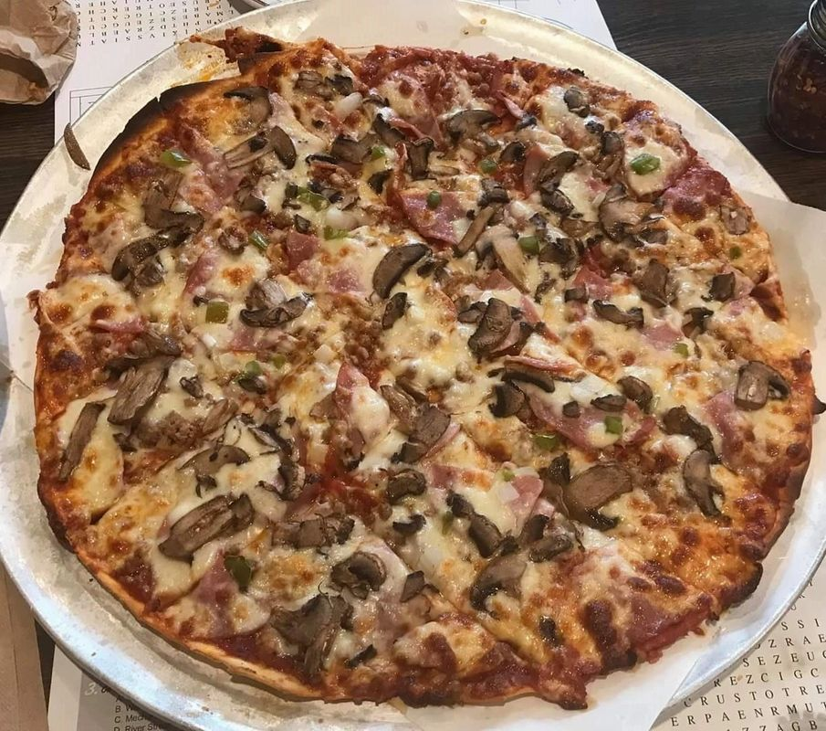
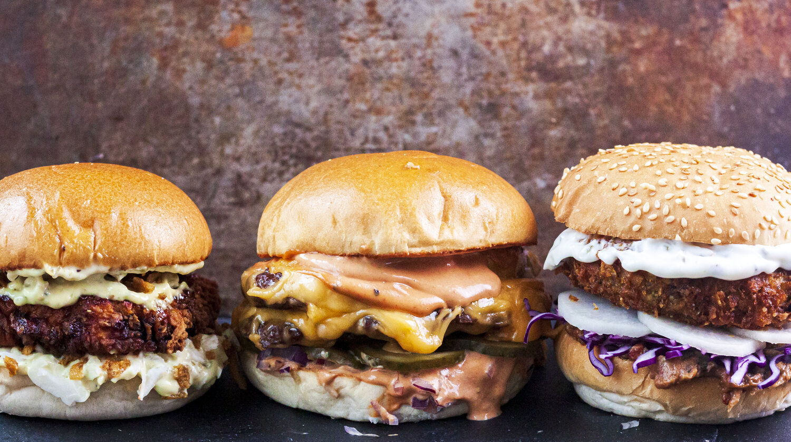
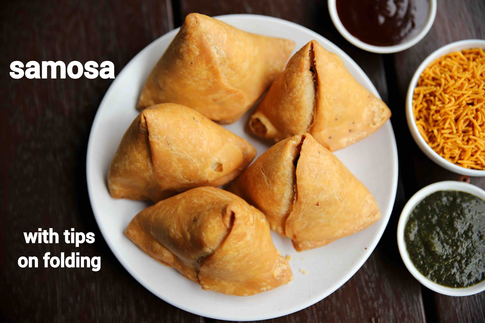

Clasificacion de Imagenes de Comida
Proyecto final de vision por computadora


Nombre: ____________________ | Curso: ____________________
Problema y objetivo
- Construir un sistema que identifique que comida aparece en una imagen.
- Clasificar en 34 clases distintas.
- Publicar una web donde el usuario sube imagen y recibe prediccion.
Dataset
- Total de imagenes: 23,873
- Numero de clases: 34
- Split: 70% train, 15% val, 15% test
Preprocesamiento
- Resize de imagenes: 128x128 y luego 224x224 para el modelo final.
- Normalizacion con media [0.6288, 0.5124, 0.3893] y std [0.2264, 0.2395, 0.2512].
- Data augmentation: flip, rotation, resized crop, affine, color jitter y perspective.
Evolucion de modelos
1) Modelo base (fully connected): 21.16%
2) Modelo mejorado (ResNet18): 78.78%
3) Modelo final (ResNet50): 91.23%
Pregunta del profesor: Se uso convolucional?
Si. Se uso una CNN (ResNet18 y ResNet50).
- ResNet es una red convolucional profunda con bloques residuales.
- Mejora porque conserva patrones espaciales de la imagen.
Que filtros use?
- No defini filtros manuales; el modelo los aprende automaticamente.
- En ResNet50 la primera capa usa conv de 64 filtros 7x7.
- Los bloques bottleneck usan convoluciones 1x1, 3x3, 1x1.
- Se aplico transfer learning + fine-tuning para adaptar esos filtros al dataset.
Arquitectura final
- Backbone: ResNet50 pre-entrenada
- Capas 1-2 congeladas
- Layer3 y Layer4 descongeladas
- Cabeza final: Dropout + Linear + BatchNorm + ReLU
Espacio para diagrama de arquitectura
(opcional)
Entrenamiento
- Optimizador: AdamW (lr = 5e-4, weight decay = 1e-4)
- Scheduler: ReduceLROnPlateau
- Early stopping y checkpointing del mejor modelo
- Tiempo aproximado del modelo final: 24 minutos
Resultados
Validation Accuracy: 91.01%
Test Accuracy: 91.23%
Salida en inferencia: clase, confianza y top-5
Espacio para grafica de accuracy/loss
Aplicacion web (Flask)
- Frontend: selector de imagen, vista previa y resultado.
- Backend: endpoint
/predict que carga el .pth y predice.
- Respuesta: clase predicha, confianza y top-5.
Espacio para captura de tu pagina web funcionando
Codigo clave (inferencia)
with torch.no_grad():
output = model(img_tensor)
probs = torch.nn.functional.softmax(output, dim=1)
conf, pred = probs.max(1)
pred_idx = pred.item()
clase = CLASSES[pred_idx]
confianza = conf.item() * 100
Demo sugerida en clase
- Subir una imagen (ej: samosa).
- Mostrar clase predicha y confianza.
- Comparar con otra imagen diferente para validar.

Conclusiones
- Si se uso red convolucional y fue clave para mejorar el rendimiento.
- Transfer learning con ResNet50 logro el mejor resultado.
- La app web permite usar el modelo de forma practica y simple.